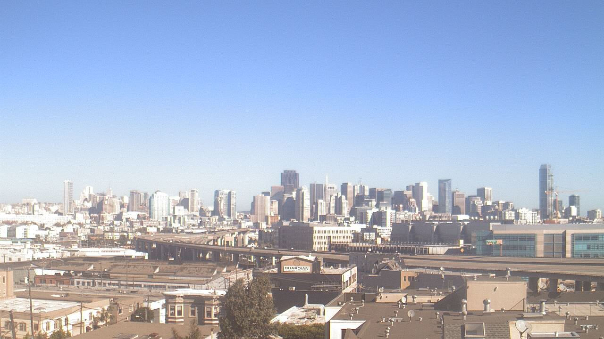
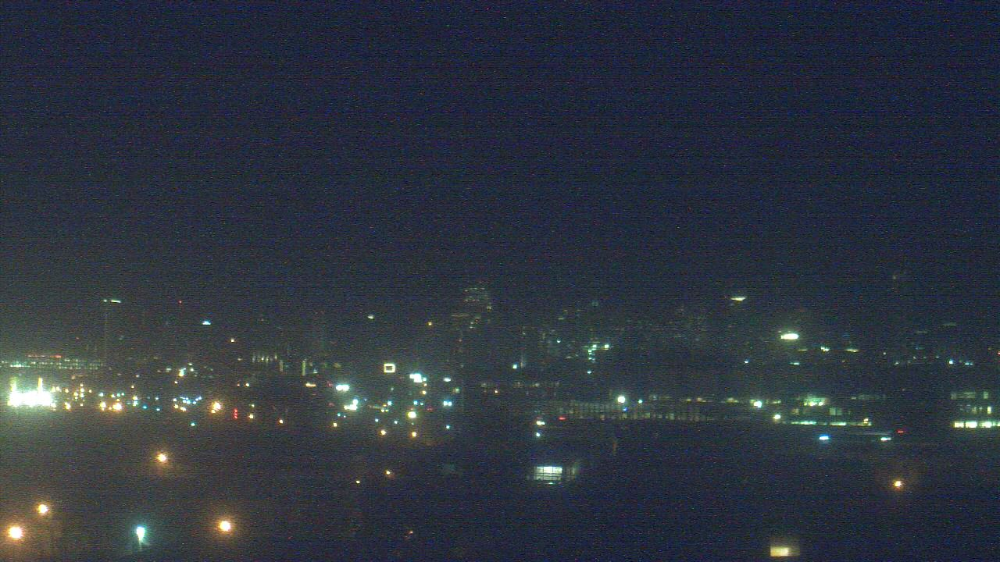
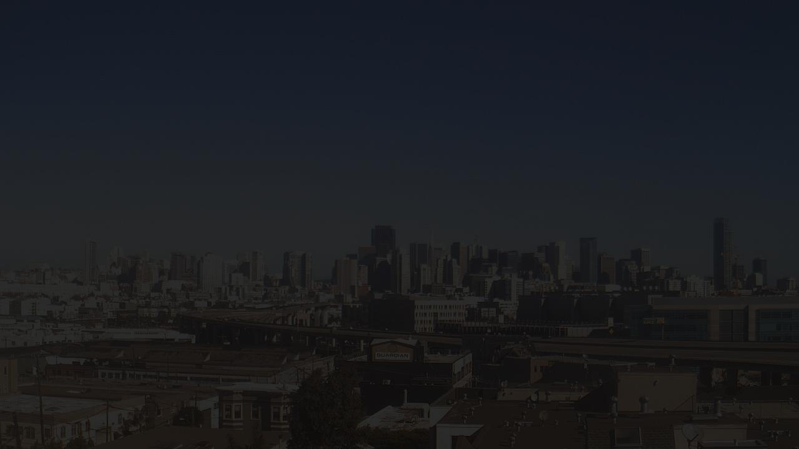
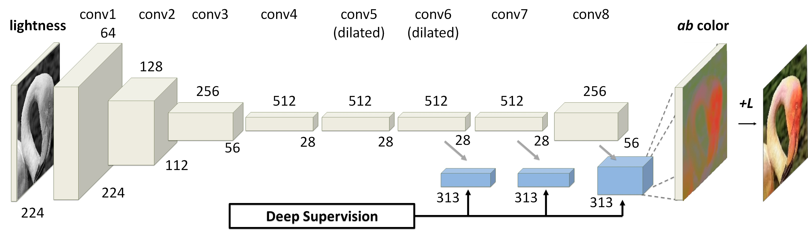
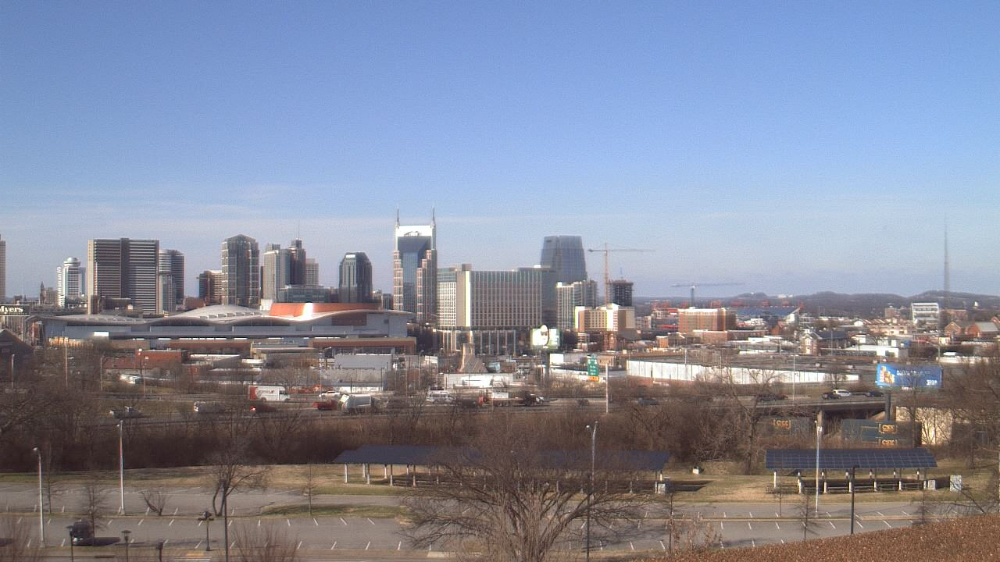
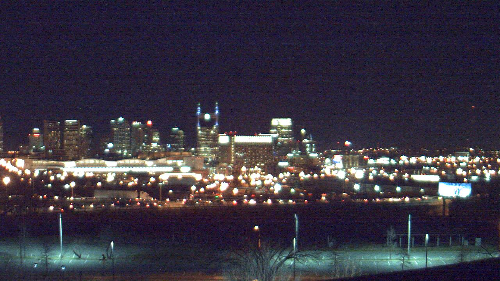

1. Problem formulation: Giving an image of a scene in daytime, generate the night version of the scene.
As you can see in
the two pictures below, differs from just adjusting the lightness
histogram which can be easily done by fix pipeline or manual editory in
photoshop, we specially focus on transform the photo of a large
scene (e.g. city) taken at daytime into the night version of the scene.
Particularly, we want to lighten the light in reasonable possition in
the scene (e.g. streetlight, window of the building) while keep a
blurry sketch of the buildings.


√ 
X
2. Structure of the CNN
We
decide to start with the structure of a recent paper "Colorful image
colorization" as shown in the following picture. This paper achieve
automatica colorization of a gray image using CNN. In this paper, while
the lightness (gray scale) are given, they predict the distribution
(histogram) of the color channel on each pixel. To apply it to our
task, we are going to change the input to the full RGB image, and
predict the lightness distribution on each pixel.
To simplify the problem, we ignore the color of the light and instead
we color it by simply using the common color of the light (e.g. white
or orange) as we can predict the position of lighting.
In a
word, we input the RGB(Lab) image and only output the new lightness
channel (L), and replace the lightness channel of old picture with it.
It will be like we are actually producing a heat map.

3. DataSet
We are planning
to use AMOS as it can provide daytime photo and night photo of a same
scene with a fix camara, which perfectly matches our task.
Currently we have made up 12000 pairs of daytime and night from 10
scene.
 
4. Limitation
We need to pick
cameras from AMOS manually and images from the same camera are highly
correlated (providing only one valuable pair), thus we have
difficulties in gathering enough data.